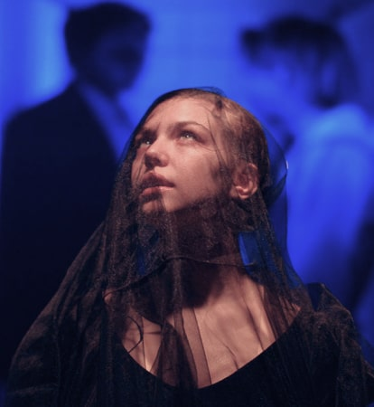

Пьеса о демоническом обаянии студентки ПТУ и ее роковой роли в жизни преподавателя философии.
12 мая 20:00
Семён Серзин сделал читку этой пьесы в рамках основной программы Любимовки-2017, Варочный Цех предоставил грант на постановку, а Московский драматический театр имени А.С. Пушкина принял спектакль в репертуар.